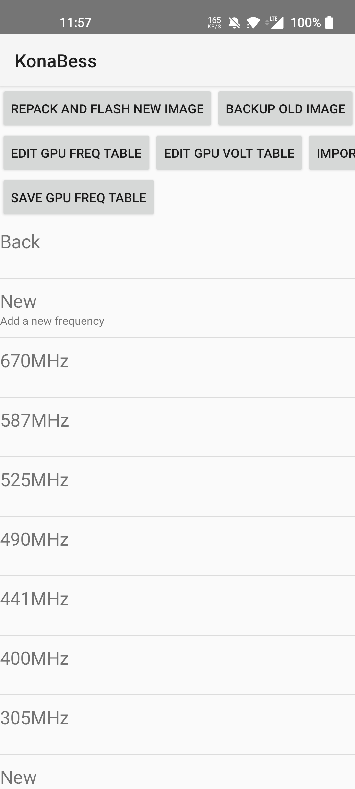
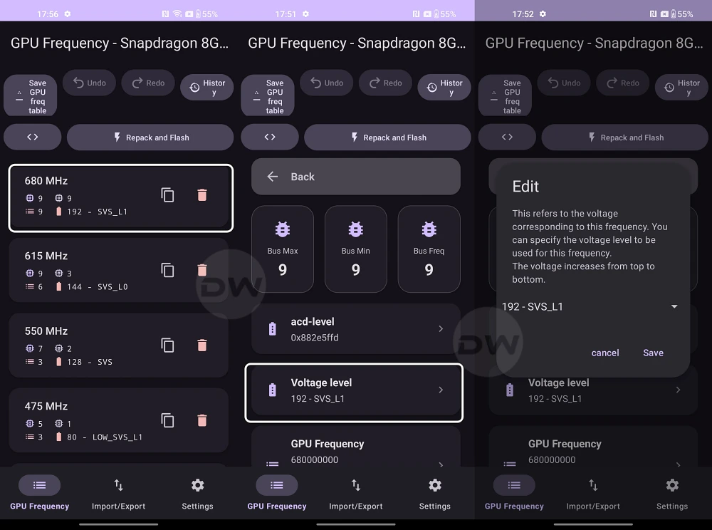

KonaBess 驯龙快问快答：降压、超频、稳定性一次说清
整理一份关于 KonaBess 的快问快答——它是什么、能做什么、怎么用才稳、值不值得折腾，都在这 8 个问题里。
整理一份关于 KonaBess 的快问快答。面向第一次接触 GPU 调校的朋友，也给刚刷了模块但还没摸清套路的玩家做个参考。
Q1：KonaBess 到底是什么？
它的KonaBess官网上写得清楚：这是一款面向骁龙芯片的 GPU 调校工具，主打图形化界面编辑 dtb 里的频率表和电压曲线。它的前身是一系列手动改 dtb 的教程和脚本，现在把那些操作全部搬进了应用里——你选频率档、填电压值，它负责校验、打包、刷入。
说穿了，KonaBess 做的事情就是让你不用反编译内核就能直接调整 GPU 的工作参数。社区里最常说的"驯龙"，指的就是拿骁龙 888、8 Gen 1 这类发热大户用它做降压。

Q2：谁需要用它？
两类人最适合：
第一类，手机被温控锁帧烦透了的用户。骁龙 888 和 8 Gen 1 是社区公认的调校热门，保守降压 30~40mV 就能明显降低温控压力，游戏过程中掉帧的次数会少很多。
第二类，喜欢折腾的玩家。降压、超频、加压三条路线都能走，渐进式调校下去能挖出不少原厂没敢给你的余量。
如果你用的是骁龙 8 Gen 2 及以后的芯片，能效比本身已经好很多，调校的必要性没那么高——KonaBess 当然也能用，但收益不如老芯片明显。
Q3：怎么装？要什么前提？
KonaBess 是 Magisk 模块，前提是你得有 root 权限。安装包从官方下载，刷入方式和普通 Magisk 模块一样：进入 Magisk → 模块 → 从本地安装 → 重启。
重启后打开应用，它会自动检测你的芯片型号并加载对应的 dtb。这里有一个容易踩的坑：部分机型的 dtb 路径不在默认位置，应用可能提示"未检测到 dtb"，这时需要手动指定 dtb 文件的路径。KonaBess文档里有各机型 dtb 位置的参考表。
Q4：降压怎么操作？直接抄社区的数值行不行？
先从结论说：不要直接抄别人的数值。每颗芯片的体质不一样——同样是骁龙 888，有人能扛住 -50mV 还稳，有人 -20mV 就花屏。
正确的降压路线是渐进式的，社区推荐三个等级：
- Level 1 保守降压：每个档位均匀压 20~30mV，风险极低，发热能降 10~15%，性能基本不变。新手从这里起步。
- Level 2 中档降压：低压档多压、高压档保守，非均匀降压更符合硬件特性。
- Level 3 激进降压：逐档寻找最低稳定电压，需要反复测试。
具体操作时先导出原厂配置留底，从 Level 1 开始，刷入后等 3~5 分钟让热管理稳定，跑一轮 Wild Life 和一两局常用的 3D 游戏，观察有没有花屏、闪退、重启。通过了存档，再往下一档走，失败了导入上一份稳定配置回退。

Q5：降压和超频的原理是什么？为什么调一个要动另一个？
芯片领域有个经典的动态功耗公式：P = C × V² × f。电压是平方级影响功耗的——电压翻倍，功耗变成 4 倍；频率翻倍，功耗才 2 倍。这就是为什么降压是调校的核心手段，投入产出比最高。
频率和电压的关系是正相关的：频率越高，芯片翻转晶体管的时间窗口越短，需要更高的电压来保证稳定。GPU 频率表从上到下电压递增不是巧合——低频低压、高频高压，这是硬件设计的物理约束。
所以超频的时候不能只拉频率，必须同时给新的峰值档位加电压。反过来，降压只能在 GPU 能稳定工作的前提下往下压，低于你的芯片能承受的最低电压就会出问题。
Q6：怎么判断调稳了？日常没事但重负载崩了算稳吗？
不算。稳定性验证必须分层级来跑，从轻到重三级测试：
- Level A 轻负载：刷微博、看视频、聊微信 30 分钟，无花屏、无闪退、体感温度正常。
- Level B 中负载：常玩的游戏（比如原神中画质）30 分钟 + 3DMark Wild Life 单次，帧率无异常波动。
- Level C 重负载：3DMark Wild Life Stress Test 20 轮循环，完整跑完、无崩溃。
只有 Level C 通过才算真稳定。日常用着没事但 Stress Test 中途崩溃，说明热积累把电压余量耗光了，还是不够稳。
观察窗口建议拉长到第一个 24 小时——前 3 次启动最容易暴露问题，之后正常使用中也留意有没有偶发崩溃。每到一个新的稳定点就导出配置存档，至少保留 3 个历史版本回退用。
Q7：调失败了会怎么样？会不会把手机搞坏？
降压失败的典型信号是花屏、闪退和系统直接重启——对应高压档降压太多、GPU 驱动崩溃、内核 panic 三种情况。处理方式很直接：花屏或闪退就把高压档的电压加回去 20~30mV，系统重启就回退到上一份稳定配置。
物理层面上，KonaBess 的调整不会永久损坏硬件。芯片本身有电压保护机制，电压过低会直接拒绝工作而不是被烧掉。真正需要注意的是不要跳过导出原厂配置这一步——留好兜底的原始配置，任何时候都能回退。
Q8：值不值得长期折腾？
值得，但要看你的芯片。骁龙 888、8 Gen 1 用户用它做保守降压，发热和续航的改善是实实在在的；其他芯片用户可以按需尝试，但不用强求。折腾本身也是乐趣——渐进式调校、反复测试、找到自己芯片的极限值，这个过程比最终的数值更有意思。
最后一句：如果你用的是骁龙 888 或 8 Gen 1，装一个 KonaBess 从保守降压 30mV 开始，大概率不会后悔。